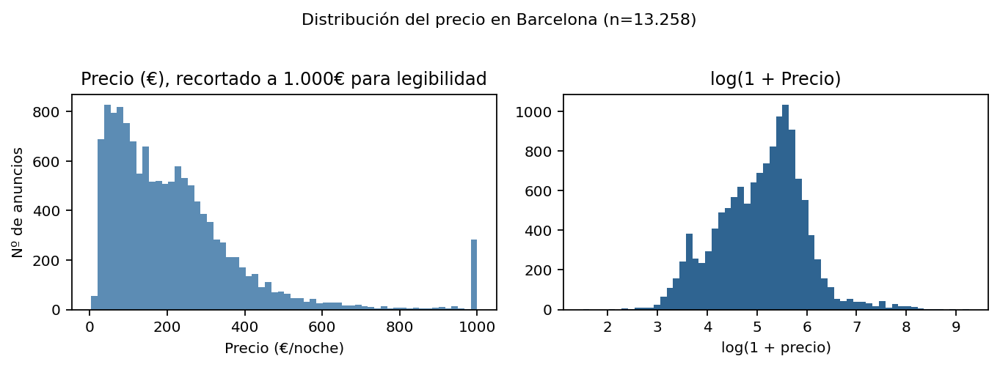
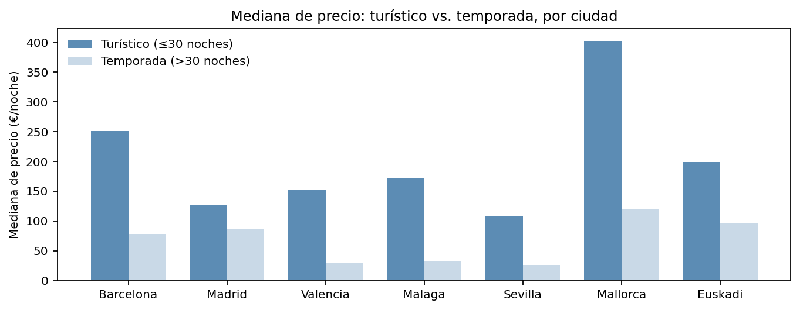
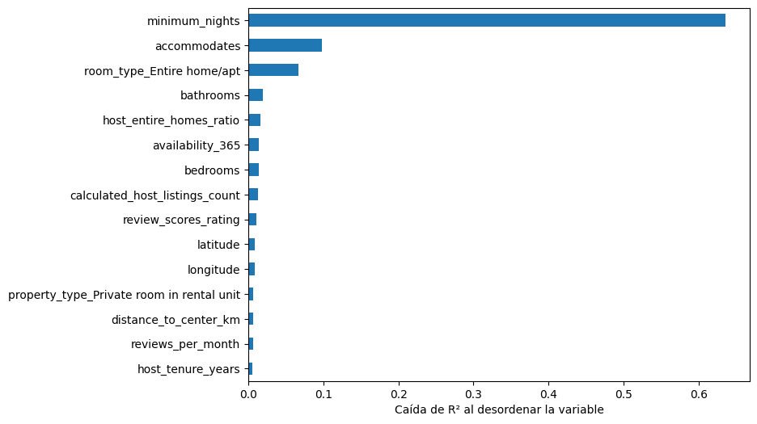
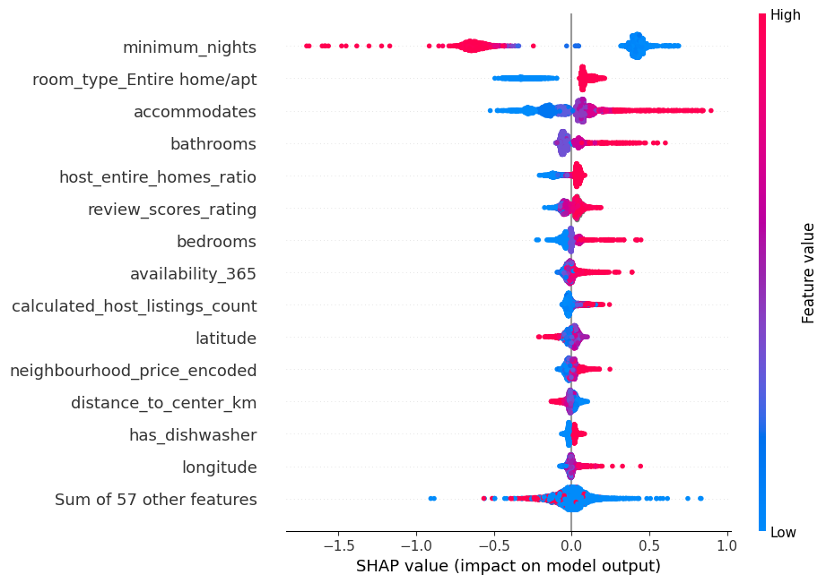
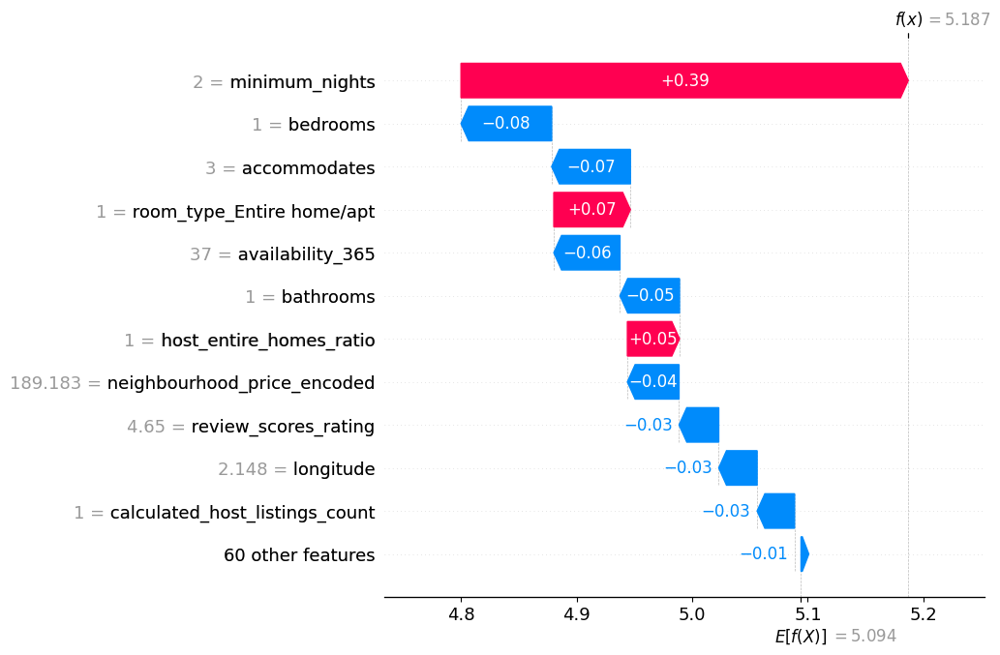
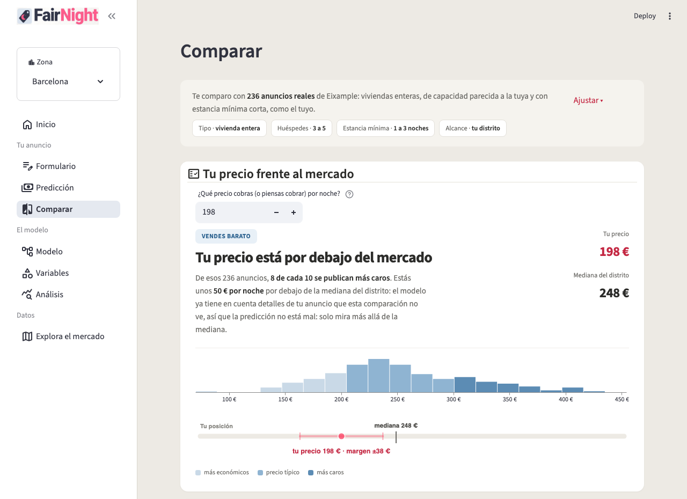

| 1. | Introducción y planteamiento del problema | 3 |
| 2. | Datos y análisis exploratorio (EDA) | 5 |
| 3. | Preparación de datos y feature engineering | 9 |
| 4. | Modelización | 11 |
| 5. | Interpretabilidad | 15 |
| 6. | Productización: la aplicación FairNight | 18 |
| 7. | Conclusiones y trabajo futuro | 21 |
| 8. | Bibliografía | 22 |
Fijar el precio de un anuncio en Airbnb es una decisión que la mayoría de los anfitriones toma de forma intuitiva, ya sea por comparación visual con dos o tres anuncios cercanos, por ensayo y error, o simplemente copiando lo que cobraba el anuncio anterior en la misma zona. Esta falta de referencia objetiva tiene un coste real en ambas direcciones. Un precio demasiado bajo deja ingresos sobre la mesa noche tras noche, y un precio demasiado alto puede mantener el anuncio prácticamente vacío durante meses sin que el anfitrión llegue a saber por qué.
El problema no es solo de intuición. Incluso un anfitrión dispuesto a analizar el mercado se encuentra con que "el mercado" no es una cifra única, ya que el precio adecuado depende de decenas de factores que interactúan entre sí (ubicación exacta, capacidad, tipo de propiedad, estancia mínima, reputación del anfitrión, historial de reseñas) y de cómo esos factores se combinan en un mercado que, además, no es homogéneo. Dentro de una misma ciudad conviven un segmento turístico de estancias cortas y otro de temporada larga, con dinámicas de precio distintas.
Este trabajo aborda ese problema en dos partes:
Nota: para el código de la aplicación FairNight (Sección 6) se han utilizado herramientas de generación de código con IA, siempre partiendo de un entendimiento previo completo de los notebooks y el pipeline de modelización de las Secciones 2 a 5.
El trabajo cubre 7 ciudades españolas (Barcelona, Madrid, Valencia, Málaga, Sevilla, Mallorca y Euskadi*), con un modelo independiente por ciudad, dado que cada mercado tiene su propia estructura de precios, su propia oferta de tipos de propiedad y, como se detalla en la Sección 2, particularidades propias que un modelo único no podría capturar bien (por ejemplo, la profesionalización del mercado en Mallorca o la ausencia de nivel de distrito en los datos de Málaga). En conjunto, el estudio se apoya sobre más de 72.500 anuncios reales, con volúmenes por ciudad de entre 5.670 (Euskadi) y 18.949 (Madrid).
* Euskadi no es una ciudad, sino la Comunidad Autónoma del País Vasco: los datos de Inside Airbnb vienen agregados así y se ha mantenido esa agrupación tal cual, sin dividir por ciudades (Bilbao, San Sebastián, Vitoria...), porque cada una por separado dejaría muestras demasiado pequeñas frente al resto de mercados del estudio.
Los datos proceden de Inside Airbnb (insideairbnb.com), un proyecto independiente de datos abiertos
que publica capturas periódicas y de acceso público de los anuncios activos en Airbnb, sin restricción de
derechos de autor sobre su uso analítico. Cada ciudad se apoya en su propio snapshot, verificado a partir
de la fecha de rastreo (last_scraped) de cada anuncio: Madrid, del 20 de junio al 2 de julio de
2026; Mallorca, del 23 de junio al 2 de julio; Barcelona y Valencia, del 24 y 26 de junio respectivamente
al 3 de julio; y Sevilla, Málaga y Euskadi, del 30 de junio al 3 de julio. Todos los ficheros se descargaron
desde insideairbnb.com/get-the-data, tomando por ciudad únicamente listings.csv.gz y
neighbourhoods.geojson; la página de cada ciudad (por ejemplo, insideairbnb.com/barcelona para
Barcelona, y análogamente para el resto) permite explorar el mismo snapshot de forma visual.
El resto del documento sigue el proceso estándar de un proyecto de data science. La Sección 2 describe los datos y el análisis exploratorio; la Sección 3, la preparación y transformación de variables; la Sección 4 compara distintas técnicas de modelización y justifica la elegida; la Sección 5 interpreta esa elección mediante importancia de variables y SHAP; la Sección 6 presenta la aplicación FairNight como resultado productivizado del modelo; y la Sección 7 cierra con las conclusiones y las líneas de trabajo futuro. Tres anexos completan el trabajo: el Anexo I recoge el glosario de las 90 columnas de origen y qué se hizo con cada una; el Anexo II desarrolla el análisis exploratorio completo; y el Anexo III recoge el código fuente completo de la aplicación FairNight y del pipeline de modelización de Barcelona.
Cada ciudad se analiza de forma independiente, sobre su propio snapshot de Inside Airbnb. Tras la
limpieza inicial (eliminación de columnas vacías, recuperación de bathrooms desde
bathrooms_text, tratamiento de nulos en campos de reseñas), los siete datasets quedan así:
| Ciudad | Anuncios (tras limpieza) |
|---|---|
| Madrid | 18.949 |
| Barcelona | 13.258 |
| Mallorca | 11.044 |
| Málaga | 8.742 |
| Sevilla | 7.640 |
| Valencia | 7.234 |
| Euskadi | 5.670 |
| Total | 72.537 |
El resto de esta sección desarrolla el EDA de Barcelona como caso detallado (la ciudad con el proceso
de limpieza más documentado y una de las de mayor volumen); el EDA completo, notebook a notebook, se
desarrolla en el Anexo II. En el caso de Barcelona, de 15.293 filas y 90 columnas originales
quedan 13.258 filas y 78 columnas, tras eliminar 12 columnas completamente vacías y recuperar 3.556 de
3.565 valores de bathrooms a partir del texto libre de bathrooms_text.
El precio por noche está fuertemente sesgado a la derecha: la mayoría de los anuncios se concentra entre
30€ y 300€, pero la cola llega hasta anuncios de lujo de varios miles de euros. Este sesgo es la razón por
la que, más adelante, el modelo se entrena sobre log1p(price) en lugar de sobre el precio en
euros directamente.

Uno de los hallazgos más relevantes del EDA, con implicaciones directas en la modelización (Sección 4) y
en la interpretabilidad (Sección 5), es que minimum_nights no es una variable más, sino que separa dos
negocios distintos que conviven bajo el mismo anuncio de Airbnb. Un alquiler con estancia mínima de hasta
30 noches compite con hoteles (mercado turístico); a partir de 31 noches, deja de considerarse
vivienda de uso turístico a efectos legales en España y compite con el alquiler residencial normal (mercado
de temporada), con precios por noche mucho más bajos.

| Ciudad | % turístico | Mediana turístico | Mediana temporada | Ratio |
|---|---|---|---|---|
| Barcelona | 63,5% | 251€ | 78€ | 3,2× |
| Madrid | 94,8% | 126€ | 86€ | 1,5× |
| Valencia | 98,5% | 152€ | 30€ | 5,1× |
| Málaga | 98,1% | 171€ | 32€ | 5,4× |
| Sevilla | 98,3% | 109€ | 26€ | 4,3× |
| Mallorca | 97,9% | 403€ | 119€ | 3,4× |
| Euskadi | 96,7% | 199€ | 96€ | 2,1× |
El patrón no es el mismo en todas las ciudades, y esa diferencia es en sí misma un resultado del EDA:
en Barcelona, los dos mercados tienen un tamaño comparable (63,5%/36,5%) con un salto de precio
brusco justo en la frontera legal de 31 noches. En el resto de ciudades el turístico domina casi todo el
catálogo (95-98%), pero con matices: en Madrid el precio baja de forma progresiva según crece la
estancia mínima exigida, sin ningún salto en las 30 noches; en Málaga, Sevilla, Mallorca y Euskadi el
precio se mantiene estable durante la primera semana y cae con fuerza a partir de ahí (especialmente
en Mallorca, donde la frontera de negocio real está en 7 noches, no en 30), de forma que gran parte de la
caída ya ocurre dentro del propio segmento "turístico" legal. Esta es la razón, como se verá en la
Sección 5, de que minimum_nights resulte la variable más importante del modelo en todas las
ciudades.
Más allá del volumen de datos, cada ciudad presenta rasgos propios que condicionan decisiones posteriores de limpieza y modelado. El más relevante aparece en varias ciudades pero no en todas, así que conviene explicarlo antes de comparar.
Algunos anfitriones, en vez de bloquear el calendario en una fecha en la que no quieren alquilar, le ponen un precio absurdamente alto (miles de euros por noche) para que el anuncio siga apareciendo como disponible, aunque en la práctica nadie vaya a pagarlo. El dato en sí está bien capturado, no es un fallo del scraping, pero tampoco es un precio de mercado real: si no se detecta, distorsiona la relación entre tamaño y precio de todo el dataset.
accommodates con price sube de 0,23 a 0,35.El resto de particularidades, ya sin relación con el precio, son estructurales:
| Ciudad | Particularidad |
|---|---|
| Málaga | Sin nivel de distrito en los datos de origen: la comparación "por distrito" cae
sobre barrio (Sección 3.6). Además, 47 categorías de property_type. |
| Mallorca | Mercado mucho más profesionalizado: mediana de 10 anuncios por anfitrión (frente a un dígito en el resto de ciudades), con gestoras de cientos de propiedades. Tampoco tiene un "centro" geográfico único de referencia para calcular distancias. |
| Euskadi | 61 categorías de property_type, la cifra más alta de las 7
ciudades; exige la agrupación de categorías raras más agresiva de todo el estudio. |
| Barcelona / Madrid | Mismo perfil de limpieza (12 columnas vacías, recuperación de
bathrooms): sirven de referencia base también en este punto. |
Con la única excepción de una fila con un valor de beds mal capturado (127 camas), no se
recorta ningún otro valor atípico por rango intercuartílico. Precios muy altos, anuncios con decenas de
reseñas o alojamientos para grupos grandes (Group Flats) son variabilidad real del mercado, no errores
de captura, y se tratan como tales: las transformaciones necesarias para modelar (logaritmos, tramos) se
aplican en la Sección 3, sin eliminar información real del dataset.
De las 78 columnas del dataset limpio de Barcelona, se descartan seis grupos antes de construir ninguna
feature: identificadores sin valor predictivo, URLs y metadatos de scraping, texto libre sin estructurar
(name, description, host_about, host_location) y, sobre
todo, dos descartes que merece la pena detallar porque son decisiones de fuga de información
(leakage), no de limpieza:
price_quote_ (fechas, precio total, precio por noche, JSON
de la cotización) se descarta en bloque: price_quote_price_per_night coincide de forma
exacta con price en casi todas las filas, el mismo precio recalculado por Airbnb.estimated_revenue_l365d: se calcula multiplicando price por
estimated_occupancy_l365d. Usarla como feature para predecir price sería fuga
de información directa: el modelo vería una variable que ya contiene la respuesta.Tras estos descartes quedan 43 columnas de partida (detalle de las 90 originales en el Anexo I).
Se aplica log1p a las variables numéricas con distribución muy asimétrica (price y
las variables de reseñas). También se construyen price_per_accommodate y
price_per_min_night, pero ambos se excluyen del modelo final por el mismo motivo que
estimated_revenue_l365d: se calculan directamente a partir de price, y sería fuga
de información.
accommodates, bedrooms, beds y bathrooms están
correlacionadas entre sí (0,80–0,84 en la EDA), lo que podría sugerir eliminar alguna. El Factor de
Inflación de la Varianza (VIF) de las cuatro está entre 1,8 y 4,3, por debajo del umbral habitual de 5: la
correlación es alta pero no redundante, así que las cuatro se mantienen en el modelo.
Cada categórica recibe un tratamiento distinto según su cardinalidad. room_type (4 categorías)
y neighbourhood_group_cleansed / distrito (10 categorías) se codifican con one-hot
directo. property_type tiene 47 categorías muy concentradas (2 de ellas explican el 85% del
dataset, y 34 de las 47 tienen menos de 10 anuncios), así que las categorías raras se agrupan antes del
one-hot. neighbourhood_cleansed (69 barrios) es demasiado granular para one-hot
directo: generaría 69 columnas casi todas dispersas. Por eso se usa target encoding: cada barrio pasa
a ser la media de price en ese barrio, suavizada hacia la media global para que los barrios con
pocos anuncios no queden con un valor extremo (neighbourhood_price_encoded).
Esta variable se calculó inicialmente sobre todo el dataset, antes de separar train/test: un error
sutil pero real, ya que el precio del test quedaría parcialmente informado por sí mismo a través de la media
del barrio. Se detectó en 03_model_baseline.ipynb y se corrigió recalculando la media
solo con las filas de train, la misma disciplina aplicada a
estimated_revenue_l365d: toda variable derivada de price se audita antes de entrar
al modelo.
El resto de variables derivadas, con la columna de partida, la transformación aplicada y el nombre con el que quedan en el modelo final:
hosts_time_as_host_years/_months se combinan en una sola
variable continua, host_tenure_years. calculated_host_listings_count no se
convierte en un flag binario "profesional" (el umbral más simple, >1 anuncio, ya marcaría al 84,6% de
los anfitriones, y la relación con el precio no es monótona: los portfolios medianos cobran más de
mediana que los grandes), sino en cuatro categorías por cuartiles, host_size_individual /
_pequeno / _mediano / _grande. El tipo de alojamiento por
anfitrión se resume en host_entire_homes_ratio (qué parte es vivienda entera).number_of_reviews, number_of_reviews_ltm,
reviews_per_month y review_scores_rating se mantienen tal cual (las tres
primeras, también en log). Se añade has_reviews (22% de los anuncios no tiene ninguna, con
review_scores_rating como NaN genuino) y, desde first_review/
last_review, listing_age_days y days_since_last_review
(correlación débil, 0,13 y 0,08). Los 6 subscores de valoración se descartan: correlacionan mucho entre
sí y no aportan más que review_scores_rating.latitude/longitude (que se mantienen) se calculan
distance_to_center_km, distancia al centro de la ciudad (correlación débil, −0,11), y
n_nearby_150m, anuncios en un radio de 150 metros (correlación modesta, 0,12). Ambas
complementan a neighbourhood_price_encoded, no la sustituyen.amenities (texto libre) se extraen cuatro flags por palabra clave,
descartando el texto: has_ac (~85%), has_dishwasher (~48%),
has_pool (~4%) y n_amenities (recuento total).
Málaga no tiene la columna neighbourhood_group_cleansed en los datos de origen. En vez de
fallar o de simular un distrito artificial, todo el pipeline (aquí y en la app) hace que "distrito" caiga
sobre el mismo nivel que "barrio" para esta ciudad. Es una decisión explícita y documentada, en vez de un
caso especial silencioso que pudiera pasar desapercibido más adelante.
Tras estas transformaciones, el dataset de Barcelona para modelado queda con 71 columnas de features
(Sección 4), los identificadores (id, host_id) y el objetivo (price).
El mismo proceso, adaptado a cada ciudad (Sección 2.4), se repite en las otras 6; detalle completo en el
Anexo I.
Todo el proceso de esta sección se hace sobre un único split 80/20 fijado al principio
(random_state=42) y guardado en disco: ningún modelo, de los ocho que se comparan en total, ve
el conjunto de test hasta la evaluación final de la Sección 4.4. Todas las métricas de esta sección están en
euros (deshaciendo log1p con expm1 antes de medir), salvo cuando se indica lo
contrario.
Antes de entrenar nada, se fija un suelo mínimo que cualquier modelo real debe superar:
| Modelo | RMSE | MAE | R² | MAPE |
|---|---|---|---|---|
| Media | 308,22€ | 155,87€ | −0,00 | 145,6% |
| Mediana | 313,66€ | 145,59€ | −0,04 | 104,0% |
Mediana por bedrooms | 221,08€ | 111,33€ | 0,49 | 84,7% |
| Regresión lineal (log1p, 71 features) | 172,37€ | 62,83€ | 0,69 | 25,8% |
Agrupar por bedrooms ya explica casi la mitad de la varianza sin entrenar ningún modelo
(confirma lo visto en el EDA, Sección 2), y una regresión lineal simple sobre las 71 features ya
mejora sustancialmente sobre eso. Esta última es el verdadero listón a batir en el resto de la sección.
Se entrenan cuatro pipelines con hiperparámetros por defecto y se comparan por validación cruzada de
5 folds sobre el train (sin tocar el test): Ridge (regularización L2, con imputación y
escalado), Random Forest, Extra Trees e Hist Gradient Boosting (estos tres sin
escalado; Hist Gradient Boosting admite NaN directamente, sin imputar).
| Modelo | RMSE | MAE | R² | MAPE |
|---|---|---|---|---|
| Ridge | 195,30€ | 64,09€ | 0,68 | 25,6% |
| Random Forest | 170,41€ | 54,51€ | 0,75 | 21,3% |
| Extra Trees | 164,89€ | 53,10€ | 0,77 | 21,5% |
| Hist Gradient Boosting | 166,92€ | 55,13€ | 0,76 | 21,4% |
Ridge queda claramente por detrás: price no depende de forma lineal de las variables, y la
multicolinealidad ya detectada en la Sección 3.3 lo penaliza más que a un modelo de árboles. Entre los tres
modelos de árboles la diferencia con hiperparámetros por defecto es pequeña: ninguno domina con
claridad todavía. Así que los tres pasan a la fase de ajuste, no solo el que gana por poco aquí.
Los tres modelos de árboles se afinan con RandomizedSearchCV (15 combinaciones, 3 folds,
45 entrenamientos por modelo). Comparados de nuevo en euros, ya con sus mejores hiperparámetros:
| Modelo (afinado) | RMSE | MAE | R² | MAPE |
|---|---|---|---|---|
| Random Forest | 167,35€ | 53,72€ | 0,76 | 21,0% |
| Extra Trees | 162,49€ | 52,79€ | 0,77 | 21,0% |
| Hist Gradient Boosting | 159,85€ | 52,89€ | 0,78 | 20,8% |
Hist Gradient Boosting gana en RMSE, R² y MAPE, y queda a 10 céntimos de MAE de Extra Trees,
un empate técnico en esa única métrica. Con tres de cuatro métricas a favor, es la elección más
sólida, y confirma que mereció la pena afinar los tres modelos y no solo el que iba ligeramente por delante
sin ajustar (Extra Trees, en la Sección 4.2). Hiperparámetros finales:
max_leaf_nodes=63, max_iter=300, max_depth=10,
learning_rate=0.05, l2_regularization=0.
Primera y única vez que se toca el test en todo el proceso, con el modelo ya elegido y entrenado sobre el train completo:
| Conjunto | RMSE | MAE | R² | MAPE |
|---|---|---|---|---|
| Train | 133,11€ | 34,01€ | 0,854 | 12,8% |
| Test | 140,96€ | 50,82€ | 0,791 | 20,6% |
Hay una brecha entre train y test, pero moderada, del tipo esperable entre ambos conjuntos, no el patrón de un sobreajuste severo (que mostraría un train casi perfecto, R²>0,95, con el test muy por detrás). Frente al baseline de regresión lineal (RMSE=172,37€, MAE=62,83€, R²=0,69, MAPE=25,8%), el salto es real: RMSE de 172€ a 141€, MAE de 63€ a 51€, R² de 0,69 a 0,79, MAPE de 26% a 21%. Un modelo de árboles bien afinado aporta una mejora sustancial sobre un baseline lineal simple.
El mismo proceso (baselines → cuatro familias → ajuste de hiperparámetros) se repite de forma independiente en cada ciudad, sin dar por hecho que el ganador de Barcelona vaya a serlo también en el resto: cada ciudad vuelve a comparar Ridge, Random Forest, Extra Trees e Hist Gradient Boosting desde cero, con sus propios datos y su propio ajuste de hiperparámetros. Hist Gradient Boosting resulta el mejor modelo en las 7 ciudades, aunque no siempre por el mismo margen: en Málaga, Sevilla, Mallorca y Euskadi gana con claridad en las cuatro métricas; en Madrid el margen es más ajustado pero consistente antes y después de afinar; y Valencia es la única con un empate técnico real (Hist Gradient Boosting gana en RMSE y R², Extra Trees en MAE y MAPE), resuelto a favor de Hist Gradient Boosting por ganar en las dos métricas más sensibles a la cola larga de precio (Sección 2.3). Los resultados finales en test:
| Ciudad | RMSE | MAE | R² (€) | R² (log) | MAPE |
|---|---|---|---|---|---|
| Barcelona | 141€ | 51€ | 0,79 | 0,89 | 20,6% |
| Madrid | 150€ | 45€ | 0,40 | 0,77 | 24,6% |
| Valencia | 110€ | 40€ | 0,37 | 0,76 | 24,1% |
| Málaga | 155€ | 52€ | 0,57 | 0,78 | 22,3% |
| Sevilla | 273€ | 56€ | 0,17 | 0,60 | 26,9% |
| Mallorca | 606€ | 212€ | 0,54 | 0,78 | 30,6% |
| Euskadi | 162€ | 71€ | 0,59 | 0,77 | 27,1% |
El R² en euros varía mucho entre ciudades (de 0,17 en Sevilla a 0,79 en Barcelona) y, a primera vista, podría leerse como que el modelo solo funciona bien en Barcelona. Esa lectura es engañosa: el R² en euros depende de la varianza total del precio en cada mercado, y ciudades como Sevilla (con una cola de precio muy larga y sin frontera limpia, Sección 2.4) o Mallorca (villas de lujo que disparan el RMSE a 606€) tienen mercados intrínsecamente más dispersos, no modelos peor entrenados. El R² en escala logarítmica (la escala sobre la que el modelo realmente optimiza) es mucho más estable (0,60–0,89) y es la comparación justa entre ciudades; el MAPE (20–31%) cuenta la misma historia: un margen de error relativo consistente, no un modelo que falla en unas ciudades y acierta en otras.
| Técnica | Bondades | Debilidades |
|---|---|---|
| Regresión lineal / Ridge | Rápida, interpretable coeficiente a coeficiente (cuando no hay multicolinealidad severa) | Asume relaciones lineales; aquí price no depende
linealmente de las variables, y la multicolinealidad detectada le penaliza especialmente |
| Random Forest | Robusta, poca necesidad de ajuste fino, tolera bien el ruido | Más lenta de entrenar y de predecir que Extra Trees o Hist Gradient Boosting con resultados comparables o peores en este problema |
| Extra Trees | Mejor que Random Forest por defecto, entrenamiento rápido | Sin importancia de variables nativa tan directa de interpretar como Random Forest; en este caso queda a un paso de Hist Gradient Boosting tras el ajuste fino |
| Hist Gradient Boosting (elegido) | Mejor resultado en 3 de 4 métricas tras el
ajuste; admite NaN nativamente, sin necesidad de imputar; entrenamiento eficiente incluso
con 71 features | Sin feature_importances_ nativo (requiere permutation
importance, más costosa de calcular, Sección 5); menos interpretable "de fábrica" que un árbol
individual |
Todo el análisis de esta sección se calcula sobre el test, no sobre el train: el objetivo es entender qué explica la capacidad del modelo para generalizar a anuncios que no ha visto, no qué usó de memoria al entrenar.
HistGradientBoostingRegressor no tiene el atributo feature_importances_ que sí
tienen Random Forest o Extra Trees. En su lugar se usa permutation importance, que para cada
variable desordena sus valores al azar y mide cuánto empeora el R² del modelo. Es más lenta de calcular,
pero mide el impacto real en el rendimiento, sin el sesgo hacia variables de alta cardinalidad que sí tiene
la importancia basada en impureza de los árboles.

minimum_nights domina por encima de todo lo demás: una caída de R² de 0,636, más de 6
veces la de la segunda variable (accommodates, 0,098). Es un resultado más marcado de lo que
sugería la EDA, donde la correlación de Pearson con price era solo moderada (−0,33),
aunque la de Spearman ya apuntaba a algo más fuerte (−0,65). La relación es fuerte pero
no lineal (el "salto" en la frontera turístico/temporada de la Sección 2.3), y un modelo de árboles la
aprovecha mucho mejor que una correlación lineal o que la regresión del baseline.
La importancia por permutación dice qué variables importan, pero no si empujan el precio hacia arriba o
hacia abajo, ni cómo se combinan en un anuncio concreto. SHAP reparte la predicción de cada anuncio en la
contribución de cada variable, la pieza que permitiría explicarle a un anfitrión "por qué tu anuncio sale a
este precio". Aviso técnico: como el modelo predice log1p(price), los valores de SHAP
están en esa escala (aditiva ahí, no en euros); el orden y la dirección siguen siendo válidos, y el ejemplo
de la Sección 5.3 se traduce a euros al final.

El orden coincide con la importancia por permutación (minimum_nights muy por delante, luego
room_type_Entire home/apt y accommodates). Dos métodos distintos de medir
importancia coinciden, lo que da bastante más confianza que si solo se hubiera calculado uno de los dos.
La dirección confirma el patrón de la Sección 2.3: en minimum_nights, los valores altos (rojo)
empujan el precio hacia abajo con fuerza y los bajos (azul) lo empujan hacia arriba, como corresponde a un
alquiler de larga estancia, más barato por noche. En accommodates, bathrooms y bedrooms
es al revés: valores altos empujan hacia arriba. review_scores_rating apenas influye (puntos de
ambos colores muy pegados a cero).
Se elige un anuncio de precio cercano a la mediana del test, y donde el modelo acierta razonablemente bien (precio real 174,03€, predicho 177,90€), para que el ejemplo sea representativo y no un caso raro donde el modelo falla:

El valor base (E[f(X)], el punto de partida antes de mirar ninguna característica del anuncio)
equivale a unos 162€. Para este anuncio en concreto, la estancia mínima es de solo 2 noches: un valor
bajo de minimum_nights y, coherente con la dirección de la Figura 4, el
empujón individual más fuerte de toda la predicción, y hacia arriba (+0,39 en escala log), propio de
un alquiler de estancia corta, con el precio por noche más alto que corresponde a ese segmento. Al ser un piso
pequeño (1 bedroom, capacidad 3), otras variables tiran algo hacia abajo (−0,08 y
−0,07), y ser vivienda entera (room_type_Entire home/apt) vuelve a empujar hacia arriba
(+0,07). El resto de ajustes son menores, hasta llegar a los 177,90€ predichos, razonablemente cerca
de los 174,03€ reales. Este es el tipo de desglose que se le podría enseñar a un anfitrión real: "tu precio
sube sobre todo por aceptar estancias tan cortas, y algo por ser vivienda entera; baja un poco por ser un
piso pequeño".
Este resultado no es un hallazgo aislado de la Sección 5: es la confirmación, a nivel de modelo, de lo que
ya apuntaba el EDA (Sección 2.3) y que se repite en las 7 ciudades con distinta forma pero el mismo fondo:
minimum_nights separa dos negocios de precio muy distinto dentro de un mismo anuncio de
Airbnb. Es también la razón por la que el Formulario de FairNight (Sección 6) pide la estancia mínima como
uno de sus primeros campos, y por la que comparables.py la usa como filtro dentro del cual se
buscan anuncios comparables en la pantalla Comparar de la aplicación, en vez de tratarla como una variable
más entre otras 70.
El modelo de la Sección 4 y la interpretabilidad de la Sección 5 se llevan a producción como FairNight, una aplicación web (Streamlit) de 8 páginas que un anfitrión real puede usar sin tocar código ni notebooks.
Cada una de las 7 ciudades tiene su propio modelo entrenado (models/<ciudad>/price_model.pkl)
y sus metadatos (model_metadata.json: columnas exactas, hiperparámetros, métricas de test de la
Sección 4), cargados con joblib. Un módulo (features.py) traduce lo que el usuario
introduce en el Formulario al mismo vector de 71 columnas, en el mismo orden, que espera el modelo. Sin
este paso, cualquier discrepancia de orden o codificación entre entrenamiento y producción invalidaría
la predicción en silencio. Un segundo módulo (comparables.py) es deliberadamente
independiente del modelo: construye el conjunto de anuncios reales para la pantalla Comparar con sus
propios filtros (tipo, capacidad ±1, mismo tramo de estancia mínima, zona), sin usar en ningún
momento la predicción para decidir qué es "parecido". Son dos fuentes de verdad separadas, para que
Comparar pueda contradecir al modelo si el mercado real lo hace.
El Formulario recoge la descripción del anuncio (ubicación en mapa, tipo de alojamiento, capacidad, historial del anfitrión, comodidades). Con eso, Predicción devuelve un precio recomendado con su rango de error real (el MAE de la Sección 4, no un número inventado) y el desglose SHAP de la Sección 5 expuesto directamente al usuario, no solo al notebook, además de un simulador "¿qué pasaría si cambio...?" para explorar el efecto de una variable a la vez:
Comparar sitúa el precio que el usuario piensa cobrar, no la predicción del modelo,
frente a los anuncios reales y comparables de su zona (el conjunto de comparables.py), con un
veredicto (vendes barato / en precio de mercado / vendes caro) cuyo margen de tolerancia es el MAE real del
modelo en ese tramo de precio, y una lista o mapa de los anuncios comparables uno a uno:

El resto de páginas exponen el trabajo de las Secciones 2, 4 y 5 de forma navegable por ciudad: Modelo (métricas de test y sesgo por segmento), Variables (importancia y PDP), Análisis (SHAP interactivo) y Explora el mercado (mapas de precio medio, ocupación y valoración por barrio, del estilo de la Sección 2).
Un cuadro de mando muestra números; FairNight recomienda, explica y contrasta. La predicción nunca aparece sola: siempre va acompañada de por qué (SHAP, Sección 5) y de si el mercado real la respalda (Comparar, Sección 2.4–3), con las dos fuentes deliberadamente desacopladas para que una pueda poner en duda a la otra. Esa combinación de predicción, explicación y validación de mercado en la misma herramienta es la diferencia entre un ejercicio de modelización y un producto que un anfitrión real usaría para decidir un precio.
El modelo final (Hist Gradient Boosting, elegido tras comparar 4 familias con validación cruzada) mejora
sustancialmente el baseline lineal en Barcelona (RMSE 172€→141€, MAE 63€→51€, R²
0,69→0,79), con la misma metodología en las otras 6 ciudades. El hallazgo más relevante, que
minimum_nights separa dos mercados de precio muy distinto con una frontera legal real, aparece
en el EDA (Sección 2.3), se confirma como variable dominante por dos métodos (Sección 5.1–5.2), y
determina cómo la app agrupa comparables (Sección 6.1). Por el camino se corrigió una fuga real
(neighbourhood_price_encoded, Sección 3.4) y se documentó que el R² en euros no es
comparable entre ciudades (Sección 4.5); el resultado se lleva a producción como aplicación completa
(Sección 6).
Más allá de minimum_nights como variable dominante común (Sección 5.1): en
Barcelona, concentra el 63% de la importancia del modelo (frente al 29% de Madrid), y coincide con
que es la primera ciudad española en anunciar la eliminación de licencias turísticas para 2028. En
Mallorca, el centro no manda: Palma está entre los municipios más baratos (mediana 262€) mientras
pueblos remotos o de costa exclusiva encabezan el ranking.
accommodates
y apenas necesita bedrooms/bathrooms, que salen bajos sin ser irrelevantes en
la realidad.estimated_occupancy_l365d, ya
presente): menos peso a anuncios caros con poca demanda real.bedrooms como filtro duro), y
extender a más ciudades con el mismo pipeline.listings.csv.gz y neighbourhoods.geojson.